Credits des photos
Les 204 photos d'aliments de Fonte & Macros viennent de Wikimedia Commons. Chaque ligne donne le fichier d'origine, son auteur tel que Commons l'enregistre, et sa licence. Cliquer sur un nom de fichier ouvre sa page Commons, qui fait foi.
| Aliment | Fichier Commons | Auteur | Licence | |
|---|---|---|---|---|
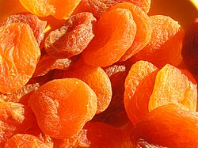 |
Abricot sec | Ab_food_04.jpg | Andrey Butko | CC BY-SA 3.0 |
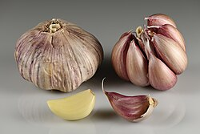 |
Ail | Garlic bulbs and cloves.jpg | Ivar Leidus | CC BY-SA 4.0 |
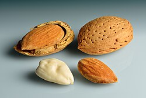 |
Amande | Almonds_-_in_shell,_shell_cracked_open,_shelled,_blanched.jpg | Baileynorwood | CC0 |
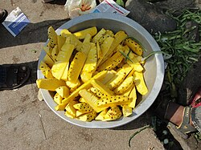 |
Ananas | A basket of pineapple cut fruit.JPG | Thamizhpparithi Maari | CC BY-SA 3.0 |
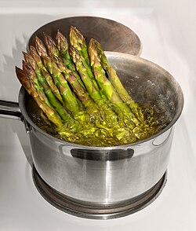 |
Asperge | Steam-boiling green asparagus.jpg | W.carter | CC0 |
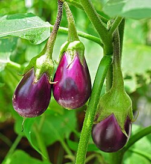 |
Aubergine | Solanum_melongena_24_08_2012_(1).JPG | Joydeep | CC BY-SA 3.0 |
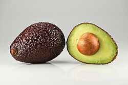 |
Avocat | Avocado Hass - single and halved.jpg | Ivar Leidus | CC BY-SA 4.0 |
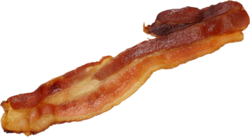 |
Bacon grille | Made20bacon.png | Carol VanHook from Des Moines, Iowa, United States | CC BY-SA 2.0 |
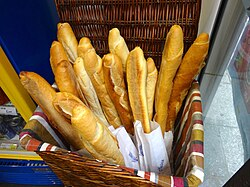 |
Baguette | Baguettes,_Paris,_France_-_panoramio.jpg | Mila Atkovska | CC BY-SA 4.0 |
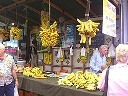 |
Banane | Bananas by the bunch - Carrara Market (2569636765).jpg | Alpha from Melbourne, Australia | CC BY-SA 2.0 |
 |
Barre chocolatee | Green_and_Black's_dark_chocolate_bar_2.jpg | Famartin | CC BY-SA 4.0 |
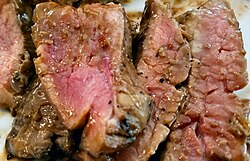 |
Bavette de bœuf | Flank steak with gravy.jpg | User:B | CC BY-SA 4.0 |
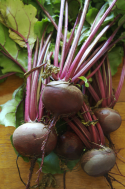 |
Betterave cuite | Detroitdarkredbeets.png | HaJunkiyada | CC BY-SA 4.0 |
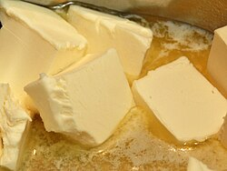 |
Beurre | Švédský_koláč_naruby_904_(cropped).JPG | Qwertyxp2000 | CC BY 4.0 |
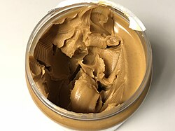 |
Beurre de cacahuete | 2020-03-24_20_57_22_An_open_jar_of_Skippy_Creamy_Peanut_Butter_in_the_Dulles_section_of_Sterling,_Loudoun_County,_Virginia.jpg | Twopower332.1938 | CC BY-SA 4.0 |
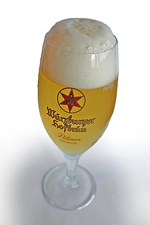 |
Biere blonde 5% | Beer_wuerzburger_hofbraue.jpg | Bjarki Sigursveinsson | Public domain |
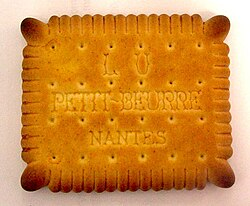 |
Biscuit sec type petit-beurre | Petit_Beurre_LU.JPG | Plbcr | CC BY-SA 3.0 |
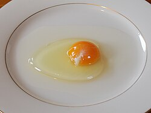 |
Blanc d'œuf | Chicken_egg01_monovular.jpg | karendotcom127 | CC BY 2.0 |
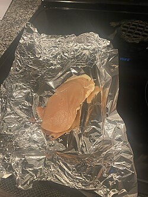 |
Blanc de poulet | CHICKEN BREAST.jpg | MrBeastRapper | CC BY-SA 4.0 |
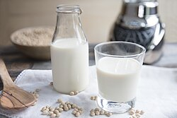 |
Boisson de soja | 004-soymilk.jpg | LinasD (this version uploaded by SlimVirgin) | CC BY-SA 3.0 |
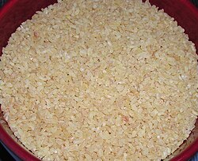 |
Boulgour cuit | Bulgur.jpg | Free for Commercial Use | CC BY-SA 2.0 |
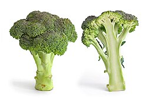 |
Brocoli cuit | Broccoli_and_cross_section_edit.jpg | Horacio Cambeiro | CC BY-SA 3.0 |
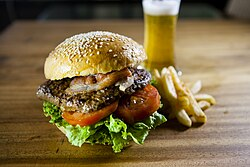 |
Burger maison | RedDot_Burger.jpg | Evan-Amos | CC0 |
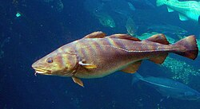 |
Cabillaud | Gadus_morhua_Cod-2b-Atlanterhavsparken-Norway.JPG | Tiia Monto | CC BY-SA 4.0 |
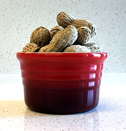 |
Cacahuete | Shelled Peanuts in a Bowl (32910711266).jpg | NIAID | CC BY 2.0 |
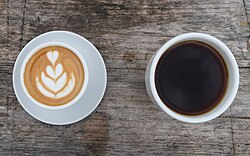 |
Cafe noir | Latte_and_dark_coffee.jpg | Julius Schorzman | CC BY-SA 2.0 |
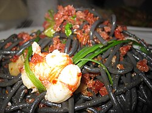 |
Calamar | Babbo-_Squid_Ink_pasta_with_green_chilis,_rock_shrimp_and_guanciale.jpg | David Monniaux | CC BY-SA 3.0 |
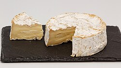 |
Camembert | Camembert_de_Normandie_(AOP)_11.jpg | Roy Zuo | CC BY-SA 4.0 |
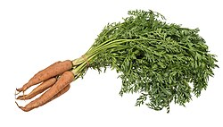 |
Carotte | Vegetable-Carrot-Bundle-wStalks.jpg | Stephen Ausmus | Public domain |
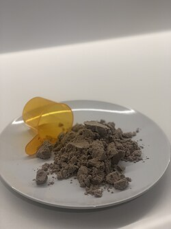 |
Caseine en poudre | Chocolate Pea Protein Powder.jpg | Em87128712 | CC BY-SA 4.0 |
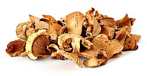 |
Champignons de Paris | Dried mushrooms.jpg | André Karwath aka Aka | CC BY-SA 2.5 |
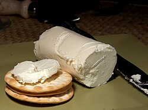 |
Chevre frais | Cheese 55 bg 061806.jpg | Jon Sullivan | Public domain |
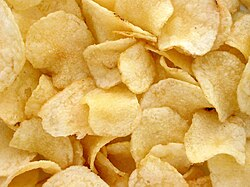 |
Chips | Potato-Chips.jpg | Gaurav Dhwaj Khadka | CC BY-SA 4.0 |
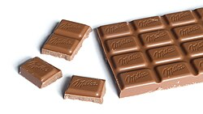 |
Chocolat au lait | Milka_Alpine_Milk_Chocolate_bar_100g_with_chunks_broken_off.jpg | Kfarren23 | CC BY-SA 4.0 |
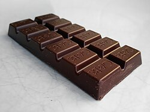 |
Chocolat noir 70% | Green_and_Black's_dark_chocolate_bar_2.jpg | Mx. Granger | CC0 |
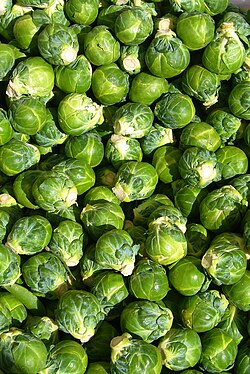 |
Chou de Bruxelles | Brussels_sprout_closeup.jpg | Rasbak | CC BY-SA 3.0 |
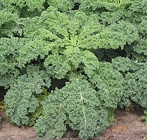 |
Chou kale | Boerenkool.jpg | Artemas Ward | Public domain |
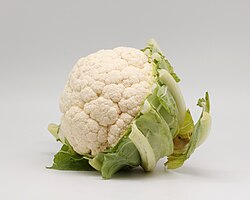 |
Chou-fleur | Chou-fleur_02.jpg | Rjcastillo | CC BY-SA 4.0 |
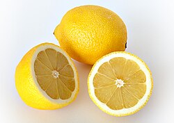 |
Citron | Lemon.jpg | André Karwath aka Aka | CC BY-SA 2.5 |
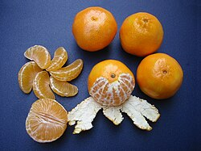 |
Clementine | Clementines_whole,_peeled,_half_and_sectioned.jpg | Rhododendrites | CC BY-SA 4.0 |
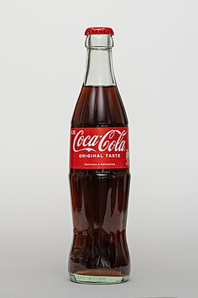 |
Coca-Cola | Coca_Cola_Flasche_-_Original_Taste.jpg | Simon Cousins from High Wycombe, England | CC BY 2.0 |
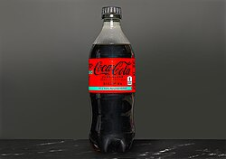 |
Cola zero | Coca_cola_zero_1.jpg | M0tty | CC BY-SA 3.0 |
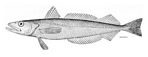 |
Colin / merlu | Merluccius_bilinearis.jpg | Don miraj | CC BY-SA 4.0 |
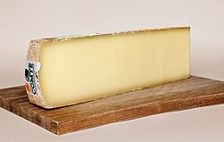 |
Comte | Comte_AOP.jpg | Myrabella | CC BY-SA 3.0 |
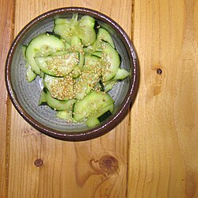 |
Concombre | Cucumber salad (7583512640).jpg | Karen and Brad Emerson | CC BY 2.0 |
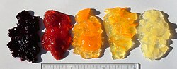 |
Confiture | Fruits_jam_variants.jpg | Hughespr | Public domain |
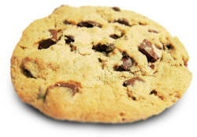 |
Cookie | Choco_chip_cookie.png | Jonathunder | GFDL 1.2 |
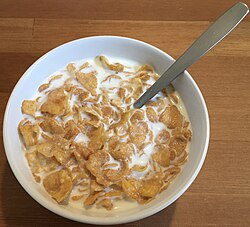 |
Corn flakes | Kellogg's_Corn_Flakes,_with_milk.jpg | Scott Bauer, USDA ARS | Public domain |
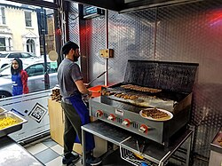 |
Cote d'agneau | Salim's, Turnpike Lane, London, England preparing and grilling kebabs.jpg | Acabashi | CC BY-SA 4.0 |
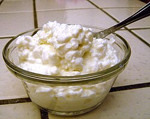 |
Cottage cheese | Cottagecheese200px.jpg | Stu Spivack - flickr.com | CC BY-SA 2.0 |
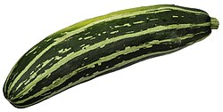 |
Courgette | CSA-Striped-Zucchini.jpg | Diego Delso | CC BY-SA 3.0 |
| Couscous poulet-merguez | Moroccan_cuscus,_from_Casablanca,_September_2018.jpg | Ovva olfa | CC BY-SA 4.0 | |
| Couscous sec | Sa_semolina_far.jpg | DrRachT | CC0 | |
| Creatine monohydrate | Bodybuilding supplement high protein drink mix 700g.jpg | Mike1024 | Public domain | |
| Creme fraiche 30% | Crème_d'Isigny_2.JPG | Patafisik | CC BY-SA 4.0 | |
| Creme legere 5% | 01_Mmm..._Apple_Crisp_with_Whipped_Cream.jpg | Birmingham Museums Trust, Angie Bolton, 2005-08-23 09:57:12 | CC BY-SA 4.0 | |
| Crevettes cuites | Spicy_fried_King_Prawns.jpg | The U.S. Food and Drug Administration | Public domain | |
| Croissant | Croissant-Petr_Kratochvil.jpg | Luc Viatour | CC BY-SA 3.0 | |
| Cuisse de poulet sans peau | Raw chicken drumsticks (3312851753).jpg | Geoff Peters from Vancouver, BC, Canada | CC BY 2.0 | |
| Datte sechee | DriedDates.JPG | Vicki Nunn | Public domain | |
| Dorade | Sparus_aurata,_Alpes-Maritimes,_Provence-Alpes-Côte_d'Azur,_FR_imported_from_iNaturalist_photo_207799710.jpg | Diego Delso | CC BY-SA 4.0 | |
| Eau | Clean_water_for_a_village_in_West_Lombok_(10686572086).jpg | Dr Jean Fortunet | CC BY-SA 3.0 | |
| Edamame | Edamame_by_Zesmerelda_in_Chicago.jpg | yomi955 | CC BY 2.0 | |
| Emmental | Emmentaler_Premier_Cru.jpg | AlMare | CC BY-SA 3.0 | |
| Epinards cuits | Liat Portal for Foodie Disorder - Scrambled eggs with spinach.jpg | HaJunkiyada | CC BY-SA 4.0 | |
| Escalope de dinde | Cooked turkey breast - November 2023 - Sarah Stierch.jpg | Missvain | CC BY 4.0 | |
| Escalope de veau | Veal cutlet Marechale.jpg | Yusuke Kawasaki (kawanet @ Flickr) ; reprocessed by Off-shell | CC BY 2.0 | |
| Feta | Feta_Cheese.jpg | — | CC BY-SA 3.0 | |
| Feves cuites | Illustration Vicia faba1.jpg | — | Public domain | |
| Figue fraiche | Fig (Ficus carica) fruit halved.jpg | Ivar Leidus | CC BY-SA 4.0 | |
| Filet mignon de porc | Poledwiczka_wieprzowa.JPG | Father.Jack from Coventry, UK | CC BY 2.0 | |
| Flocons d'avoine | Rolled_oats.jpg | en:user:Hankwang | Public domain | |
| Foie de veau | Pig's_liver_with_sauteed_onion.jpg | Acabashi | CC BY-SA 4.0 | |
| Fraise | Garden_strawberry_(Fragaria_×_ananassa)_single2.jpg | Ivar Leidus | CC BY-SA 4.0 | |
| Framboise | Raspberry_-_halved_(Rubus_idaeus).jpg | Juhanson | CC BY-SA 3.0 | |
| Frites | French_Fries.JPG | Chris Woodrich | CC BY-SA 4.0 | |
| Fromage blanc 0% | Fromage-blanc1_cropped.jpg | SKopp | CC BY-SA 4.0 | |
| Fromage blanc 3% | Skimmed_milk_quark_on_spoon.jpg | JIP | CC BY-SA 4.0 | |
| Gainer en poudre | Orgain organic protein powder.jpg | TechnoTalk | CC BY-SA 4.0 | |
| Galette de riz souffle | PuffedRice.jpg | BD2412 | Public domain | |
| Gesiers de volaille | Gizzard_of_Chicken.JPG | Chun Yip So | CC BY 2.0 | |
| Glace vanille | Vanilla_Ice_Cream_Cone_at_Camp_Manitoulin.jpg | Acabashi | CC BY-SA 4.0 | |
| Graine de chia | Seed_of_chia_(Salvia_hispanica)Salvia_hispanica_group.jpg | Magister Mathematicae | CC BY-SA 3.0 | |
| Graine de courge | Pepita_de_calabaza.jpg | Daniel Schwen | CC BY 3.0 | |
| Graine de lin | Cup containing organic remains, clay - Museo Egizio (Turin) S 8348 p02.jpg | — | CC0 | |
| Graine de tournesol | Sunflower_Seeds_Kaldari.jpg | Kritzolina | CC BY-SA 4.0 | |
| Grenade | Pomegranate_Juice_(2019).jpg | Fir0002 | GFDL 1.2 | |
| Hareng fume | Kipper.JPG | The U.S. Food and Drug Administration | Public domain | |
| Haricots blancs cuits | Red_Rajma_BNC.jpg | Xemenendura | CC BY-SA 4.0 | |
 |
Haricots rouges cuits | Red_Rajma_BNC.jpg | Infrogmation | CC BY-SA 4.0 |
| Haricots verts | Heaps_of_beans.jpg | Christopher Franz | CC BY-SA 4.0 | |
| Harira | Harira.png | HaJunkiyada | CC BY-SA 4.0 | |
| Houmous | Lebanese_style_hummus.jpg | TechnoKittyCat | CC BY 4.0 | |
| Huile d'olive | Oliven_V1.jpg | Badagnani (talk) | CC BY 3.0 | |
| Huile de coco | Coconut_and_oil.jpg | Chenspec | CC BY-SA 4.0 | |
| Huile de colza | Canola_Oil_(4107885913)_Cropped.jpg | Ivar Leidus | CC BY-SA 4.0 | |
| Jambon blanc decouenne | Ham_(4).jpg | Anna.Massini | CC BY 4.0 | |
| Jambon cru | Prosciutto_di_Parma,_ham_producing.jpg | Petar43 | CC BY-SA 4.0 | |
| Jaune d'œuf | Raw_egg.jpg | Marc-Lautenbacher | CC BY-SA 4.0 | |
| Jus d'orange | Orangejuice.jpg | Agency of the United States Department of Agriculture Edited Version by: Arad | Public domain | |
| Kebab (sandwich) | Döner_kebab_slicing.jpg | AleGranholm | CC BY 2.0 | |
| Kiwi | Kiwifruit cross section.jpg | Ivar Leidus | CC BY-SA 4.0 | |
| Lait d'amande non sucre | Home-made_almond_milk,_November_2012.jpg | Mx. Granger | CC0 | |
 |
Lait demi-ecreme | Glass_of_Milk_(33657535532).jpg | www.Pixel.la Free Stock Photos | CC0 |
| Lait ecreme | Skim_milk_poured_into_cereal_bowl.jpg | Joseph Tylczak | CC BY-SA 3.0 | |
| Lait entier | Glass_of_Milk_(33657535532).jpg | Ukko-wc | CC BY-SA 3.0 | |
| Lapin | Jumbo rabbit meat.jpg | Gacky-79 | CC BY-SA 4.0 | |
| Lasagnes | Lasagne_-_stonesoup.jpg | Breville USA | CC BY 2.0 | |
| Lentilles corail cuites | 3_types_of_lentil.png | HaJunkiyada | CC BY-SA 4.0 | |
 |
Lentilles vertes cuites | 3_types_of_lentil.png | ManasaRao | CC BY-SA 4.0 |
| Magret de canard | Honey Roasted Duck Breast (sizzling) - Siam Siam 2024-07-31.jpg | Andy Li | CC0 | |
| Mais doux | VegCorn.jpg | PAULIX04 | CC BY-SA 4.0 | |
| Maltodextrine | Maltodextrin powder.jpg | Awkwafaba | CC BY-SA 4.0 | |
| Mangue | Mangos_-_single_and_halved.jpg | Ivar Leidus | CC BY-SA 4.0 | |
| Maquereau | Fresh Fishes from Ibeno local government Mackerel, Croaker, Bonga, Prawn(Ebad, Epina, Akwad, Ekem) 02.jpg | GodswillSE | CC BY-SA 4.0 | |
| Margarine | Margarine.jpg | BMK | CC BY-SA 3.0 | |
| Mayonnaise | Mayonnaise_(1).jpg | 毒島みるく | CC0 | |
| Melon | Meloen_vrucht_met_bloem.jpg | fir0002 flagstaffotos [at] gmail.com Canon 20D + Sigma 150mm f/2.8 | GFDL 1.2 | |
| Merguez | Barbecue - merguez - saucisses.jpg | Benoît Prieur | CC0 | |
| Miel | Runny_hunny.jpg | Hayden Soloviev | CC BY 4.0 | |
| Moules cuites | CornishMussels.JPG | Kgbo | CC BY-SA 4.0 | |
| Mozzarella | Mozzarella_di_bufala3.jpg | Peachyeung316 | CC BY-SA 4.0 | |
| Muesli sans sucre ajoute | Dorset_Cereals_muesli.jpg | Original description was: I, VirtualSteve took this photograph on February 19, 2006. | CC BY-SA 2.5 | |
| Myrtille | Blueberries.jpg | Petar Milošević | CC BY-SA 4.0 | |
| Noisette | Hazelnuts_(Corylus_avellana)_-_whole_with_kernels.jpg | Fir0002 at English Wikipedia | CC BY-SA 3.0 | |
| Noix | Walnuts_-_whole_and_open_with_halved_kernel.jpg | George Chernilevsky | Public domain | |
| Noix de cajou | Cashew_apples.jpg | Wilfredor | CC0 | |
| Noix de coco rapee | Orange Snow Cream Delight.jpg | Manjeshwari poet mysore | CC BY-SA 4.0 | |
| Œuf entier | Huevo_frito.jpg | Biswarup Ganguly | CC BY 3.0 | |
| Oignon | Mixed_onions.jpg | Colin | CC BY-SA 3.0 | |
| Omelette nature | Gorgonzola_+_Bacon_Omelette_@_Omelegg_@_Amsterdam_(16600947041).jpg | Matti Blume | CC BY-SA 4.0 | |
| Orange | Oranges_-_whole-halved-segment.jpg | Ivar Leidus | CC BY-SA 4.0 | |
| Paella | Paella de fruit de mer.jpg | Wilfredor | CC0 | |
| Pain au chocolat | Pain_au_chocolat_Luc_Viatour.jpg | Luc Viatour | CC BY-SA 3.0 | |
| Pain aux cereales | Multigrain.jpg | Eviatar Bach | CC0 | |
| Pain complet | Vegan_no-knead_whole_wheat_bread_loaf,_September_2010.jpg | muffinn from Worcester, UK | CC BY 2.0 | |
| Pain de mie | Fresh_made_bread_05.jpg | Bit Boy from Los Angeles, California, USA | CC BY 2.0 | |
| Parmesan | Parmigiano_Reggiano,_Italien,_Europäische_Union.jpg | Myrabella | CC BY-SA 4.0 | |
| Pasteque | Taiwan_2009_Tainan_City_Organic_Farm_Watermelon_FRD_7962.jpg | Ralff Nestor Nacor | CC BY-SA 4.0 | |
| Patate douce cuite | Ipomoea_batatas_006.JPG | Shark2025 | CC BY-SA 4.0 | |
| Pate a tartiner choco-noisette | Schockelasbotterschmir.jpg | upyernoz from Haverford, USA | CC BY 2.0 | |
| Pates completes cuites | Whole wheat penne, cooked and uncooked.jpg | Ragesoss | CC BY-SA 4.0 | |
| Pates crues | Pennelisce_closeup.png | Mx. Granger | CC0 | |
| Pates cuites | Spaghettoni.jpg | David Adam Kess | CC BY-SA 4.0 | |
| Peche | Illustration_Prunus_persica_clean_no_descr.jpg | Jack Dykinga, USDA | Public domain | |
| Petits pois | Doperwt_rijserwt_peulen_Pisum_sativum.jpg | Jorge Royan | CC BY-SA 3.0 | |
| Pistache | Pistachio_vera.jpg | Jebulon | Public domain | |
| Pizza margherita | Neapolitan_pizza_at_Trappica_(48701940197).jpg | Mario56 | CC BY-SA 3.0 | |
| Poire | Pears.jpg | Rhododendrites | CC BY-SA 4.0 | |
| Poireau | Illuminated facade of a restaurant serving traditional food with fresh vegetables in Chiyoda, Tokyo.jpg | Basile Morin | CC BY-SA 4.0 | |
| Pois casses cuits | Split_pea.jpg | Bertrand Man | CC BY 2.0 | |
| Pois chiches cuits | Liat Portal for Foodie Disorder - Hummus with spiced chickpeas.jpg | HaJunkiyada | CC BY-SA 4.0 | |
| Poivron | Green-Yellow-Red-Pepper-2009.jpg | Brocken Inaglory | CC BY-SA 3.0 | |
| Polenta cuite | Cotechino-Servito-Polenta-Lenticchie.jpg | Edithobayaa1 | CC BY-SA 4.0 | |
| Pomme | Pink_lady_and_cross_section.jpg | Abhijit Tembhekar from Mumbai, India | CC BY 2.0 | |
| Pomme de terre cuite | Patates.jpg | George Chernilevsky | Public domain | |
| Potiron | FrenchMarketPumpkinsB.jpg | George Chernilevsky | Public domain | |
| Poulet roti avec peau | Max's_Roasted_Chicken_-_Evan_Swigart.jpg | Fatimahope | CC BY-SA 4.0 | |
 |
Proteine de pois en poudre | Chocolate Pea Protein Powder.jpg | Em87128712 | CC BY-SA 4.0 |
| Proteine de soja texturee | Textured_vegetable_protein.jpg | No machine-readable author provided. Polyparadigm~commonswiki assumed (based on copyright claims). | Public domain | |
| Pruneau | Rosales_-_Dried_Prunus_domestica_d.jpg | CallMeBarcode | CC BY-SA 4.0 | |
| Puree d'amande | Breville_Boss-_Almond_Butter_(square_crop).jpg | Breville USA | CC BY 2.0 | |
| Quiche lorraine | Quiche.jpg | Arnaud 25 | CC BY-SA 4.0 | |
| Quinoa cuit | Liat Portal for Foodie Disorder - Quinoa, Schnitzel and Israeli Salad.jpg | HaJunkiyada | CC BY-SA 4.0 | |
| Raisin | Grapes,_Rostov-on-Don,_Russia.jpg | Unknown authorUnknown author | Public domain | |
| Raisin sec | Raisins_01.jpg | Paweł Kuźniar (Jojo_1, Jojo) | CC BY-SA 3.0 | |
| Ricotta | Ricotte_fresche.jpg | Paoletta S. | CC BY 2.0 | |
| Riz basmati cuit | Duddleswell cheese with brown basmati rice.JPG | Zigzig20s | CC BY-SA 3.0 | |
| Riz blanc cru | Uncooked ST25 rice on bamboo surface.jpg | VinhNguyen.1257 | CC BY-SA 4.0 | |
| Riz blanc cuit | Half_a_cup_of_rice._Brown_rice_is_the_best_choice.JPG | Douglas Perkins | CC0 | |
| Riz cantonais | Koh_Mak,_Thailand,_Fried_rice_with_seafood,_Thai_fried_rice.jpg | 7Belle7 | CC BY-SA 4.0 | |
| Riz complet cuit | Reis_-_Sorte_C_voll.jpg | jules / stonesoup | CC BY 2.0 | |
| Rumsteck | Rump_steak.jpg | Cobbold, Elizabeth, 1767-1824; Jermyn. Lætitia | No restrictions | |
| Salade cesar | Caesar_salad_(2).jpg | Andy Li | CC0 | |
| Salade verte | Iceberg_lettuce_in_SB.jpg | Di (they-them) | CC BY-SA 4.0 | |
| Sandwich jambon-beurre | Sandwich_jambon-beurre.jpg | Acabashi | CC BY-SA 4.0 | |
| Sardines a l'huile egouttees | Sardines_-_鰯(いわし).jpg | Thomon | CC BY-SA 4.0 | |
| Saucisse de Toulouse | Saucisse_de_Toulouse.jpg | Takeaway | CC BY-SA 3.0 | |
| Saumon frais | Sashimi_-_Maguro_Restaurant,_Bangna,_Bangkok_(44856596864).jpg | FULVIO_TOGNON | CC0 | |
| Saumon fume | 2014_smoked_salmon_and_egg_salad_toasted_baguette.JPG | HaJunkiyada | CC BY-SA 4.0 | |
 |
Semoule / couscous cuit | Moroccan_cuscus,_from_Casablanca,_September_2018.jpg | Habib M'henni | CC BY-SA 4.0 |
| Skyr | Skyr.is_með_vanillu.jpg | Schnee (talk) | CC BY-SA 4.0 | |
| Sole | Dried Sole fish ( Cynoglossus macrostomus).jpg | Sannidhishetty | CC0 | |
| Soupe de legumes | Vegetable_udon_noodle_soup.jpg | Horacio Cambeiro | CC BY-SA 3.0 | |
| Steak hache 15% MG | Hackfleisch-1.jpg | No machine-readable author provided. Rainer Zenz assumed (based on copyright claims). | CC BY-SA 3.0 | |
 |
Steak hache 5% MG | Hackfleisch-1.jpg | Print made by: Isaac Cruikshank After: George Moutard Woodward (?) Published by: S W Fores | Public domain |
| Sucre blanc | Saccharose2.svg | Herusutimbul | CC BY-SA 4.0 | |
| Surimi | TubOfSurimi.jpg | Frrrrred | CC BY-SA 3.0 | |
| Sushi | Sushi_platter.jpg | JonaSali29 | CC BY-SA 4.0 | |
| Tajine de poulet | Tajine-marocain-un-plat-varie-et-sain_(cropped).jpg | This Photo was taken by Timothy A. Gonsalves. Feel free to use my photos, but please mention me as the author. I would m | CC BY-SA 4.0 | |
| Tempeh | Tempeh_(8681605421).jpg | Sakurai Midori | CC BY-SA 3.0 | |
| The infuse | Longjing_tea_steeping_in_gaiwan.jpg | AntanO | CC BY-SA 4.0 | |
| Thon au naturel (boite) | Chicharros_en_escabeche.jpg | Daniel Case | CC BY-SA 3.0 | |
| Thon frais | DFC 4014 Freshly made steak tartare on crusty rolls topped with chopped onions and served with sliced cucumber tomato and greens.jpg | PattayaPatrol | CC BY-SA 4.0 | |
| Tofu ferme | Japanese_SilkyTofu_(Kinugoshi_Tofu).JPG | Archon6812 | CC BY-SA 3.0 | |
| Tomate | Tomato_je.jpg | George Chernilevsky | CC BY 4.0 | |
| Tortilla de ble | Smoked_chicken_and_avocado_wrap.jpg | — | Public domain | |
| Truite | Rainbow trout at restaurant Salve.jpg | JIP | CC BY-SA 4.0 | |
| Viande hachee d'agneau | Kibbeh Nayyeh.jpg | 122589423KM at English Wikipedia | Public domain | |
| Vin rouge | Red_Wine_Glass.jpg | André Karwath aka Aka | CC BY-SA 3.0 | |
| Vinaigrette allegee | Vinaigrette_dressing_with_a_chopped_salad.jpg | GrammarFascist | CC BY-SA 4.0 | |
| Whey en poudre | Whey_powder.jpg | Sandstein | CC BY 3.0 | |
| Yaourt grec 0% | Labneh01.jpg | Personal Creations | CC BY 2.0 | |
| Yaourt nature | Joghurt.jpg | Cheikh cherif | CC BY-SA 4.0 |